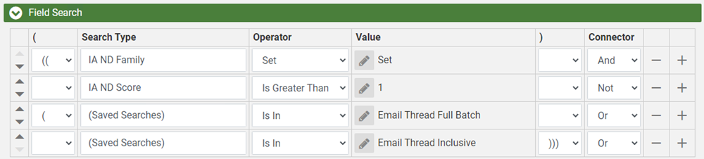
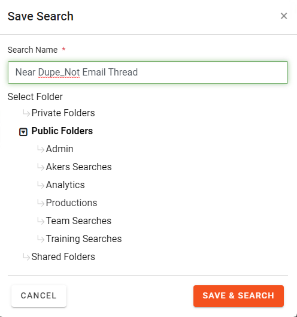

Follow
the process for creating Full Thread or Inclusive Email Searches. For more information, see
Open the Advanced Search window to create a new Field Search. Include Families on the search by ensuring Family is selected from the drop-down.

The criteria of the search should identify all documents that received a Near Duplicate value, and are not part of the Email Thread searches. This can be accomplished
by searching for any documents where the IA ND Family
field contains a value greater than 1 AND Is NOT In [Email Thread Searches].This can be accomplished with the
following criteria. For more information about the IA ND Family field and other near-duplicate fields, see

Click  and provide a name for the search. For example you could name the search Near Dupe_Not Email Thread.
and provide a name for the search. For example you could name the search Near Dupe_Not Email Thread.

When creating a new Active Learning Disabled Review Pass use your
Advanced Search for the documents to be batched. See
|
|
Note: When creating a Near-Duplicate review batch the following fields should be selected:
|